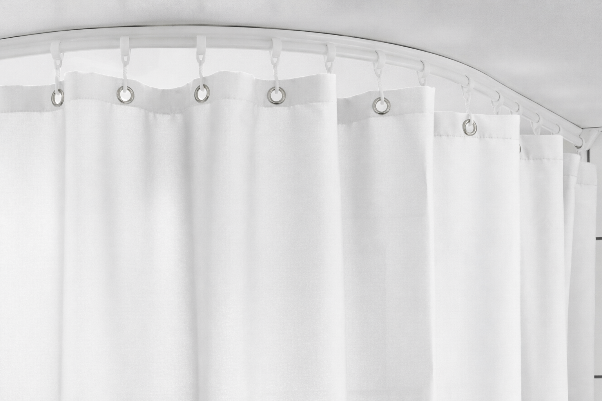

Healsafe Interior
Duschvorhang/h2>
J-Trac Duschvorhang weiß
Deckenmontierte J-Trac Gardinenschiene verhindert Selbstverletzung und Selbsttötung
Kontakt


Deckenmontierte J-Trac Gardinenschiene verhindert Selbstverletzung und Selbsttötung